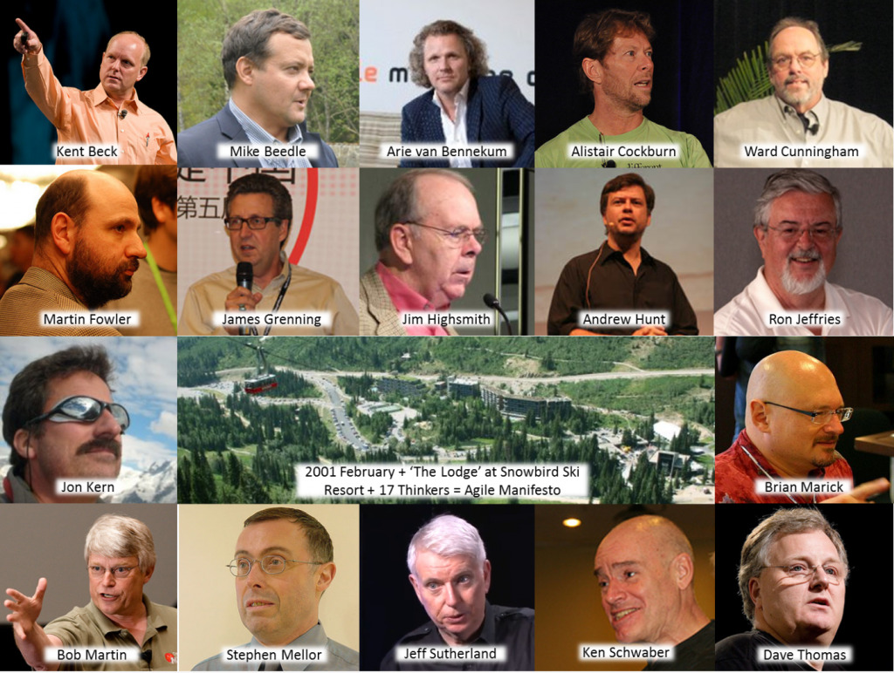

¿Por que agile?
¿Que es el manifesto agile?
Es un documento que establece los valores claves y 12 principios detrás de la filosofía Agile y sirve para ayudar
a los equipos de desarrollo a trabajar de manera más sustentable y eficiente.
¿Quiénes crearon el manifesto agile?

- Kent Beck
- Mike Beedle
- Arie van Bennekum
- Alistair Cockburn
- Ward Cunningham
- Martin Fowler
- James Grenning
- Jim Highsmith
- Andrew Hunt
- Ron Jeffries
- Jon Kern
- Brian Marick
- Robert C. Martin
- Steve Mellor
- Ken Schwaber
- Jeff Sutherland
- Dave Thomas
¿Cuáles son los principios del manifesto?
- Nuestra mayor prioridad es satisfacer al cliente mediante la entrega temprana y continua de software
con valor.
- Aceptamos que los requisitos cambien, incluso en etapas tardías del desarrollo. Los procesos Ágiles
aprovechan el cambio para proporcionar ventaja competitiva al cliente.
- Entregamos software funcional frecuentemente, entre dos semanas y dos meses, con preferencia al
periodo de tiempo más corto posible.
- Los responsables de negocio y los desarrolladores trabajamos juntos de forma cotidiana durante todo
el proyecto.
- Los proyectos se desarrollan en torno a individuos motivados. Hay que darles el entorno y el apoyo
que necesitan, y confiarles la ejecución del trabajo.
- El método más eficiente y efectivo de comunicar información al equipo de desarrollo y entre sus
miembros es la conversación cara a cara.
- El software funcionando es la medida principal de progreso
- Los procesos Ágiles promueven el desarrollo sostenible. Los promotores, desarrolladores y usuarios
debemos ser capaces de mantener un ritmo constante de forma indefinida.
- La atención continua a la excelencia técnica y al buen diseño mejora la Agilidad.
- La simplicidad, o el arte de maximizar la cantidad de trabajo no realizado, es esencial.
- Las mejores arquitecturas, requisitos y diseños emergen de equipos auto-organizados
- A intervalos regulares el equipo reflexiona sobre cómo ser más efectivo para a continuación ajustar
y perfeccionar su comportamiento en consecuencia.
¿Por que consideran que el manifesto es importante?
Es un recurso valioso para los equipos de desarrollo de software, ya que los equipa con un marco flexible para
guiar sus procesos de gestión de proyectos y mantener las mejores prácticas Agile.
Ventajas y desventajas
Ventajas:
- Rapidez
- Clientes felices
- Consideración a los empleados
- Feedback constante
Desventajas:
- Al inicio del proyecto es difícil predecir un estimado total del proyecto, ya que esta metodología se basa
en cambios constantes.
- Es necesario un alto nivel de interacción entre cliente y desarrolladores.
- Los equipos se desvían fácilmente por la falta de procesos
Ejemplos del manifesto